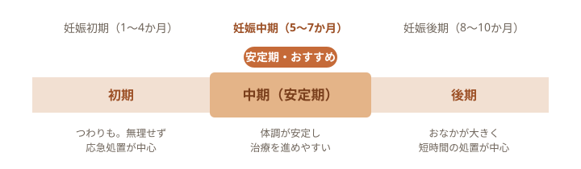

おなかの赤ちゃんのためにも、お母さんのお口から。
妊娠中は、ホルモンの変化やつわりで、お口のトラブルが起きやすい時期です。当院では体調を最優先に、無理のない範囲で診療します。受診のときは母子健康手帳をお持ちいただき、妊娠週数や体調、気になることをお聞かせください。「歯医者は出産後でいいかな」と思っていた方も、一度ご相談ください。（仮）
こんなときはご相談ください（仮）
- 歯ぐきが腫れる・歯みがきで血が出る
- つわりで歯みがきがつらい
- 口のねばつき・口臭が気になる
- 妊娠前から治療途中の歯がある
- 妊婦歯科健診を受けたい
- 出産後にそなえて相談しておきたい
妊娠中に、口のトラブルが増えるわけ
妊娠すると女性ホルモンが増え、その影響で歯ぐきが炎症を起こしやすくなります（妊娠性歯肉炎）。だ液の量や性質も変わり、お口の中が酸性にかたむきやすくなります。さらに、つわりで歯みがきがしづらい、少しずつ何度も食べる、といったことが重なると、むし歯や歯周病のリスクが上がります。
歯ぐきの健康と、赤ちゃん
妊娠中の歯周病は、早産や低体重児出産との関連が指摘されています（日本臨床歯周病学会など）。歯ぐきの強い炎症が、子宮の収縮にかかわる物質を増やすと考えられています。すべての方に起こるわけではありませんが、お口を健やかにたもつことは、お母さんと赤ちゃんの双方にとって意味があります。歯ぐきの変化に気づいたら、早めにご相談ください。
受診のタイミング
妊娠中も歯科を受診できます。体調がよければ、いつでもご相談ください。治療を進めるなら、体調が落ち着く妊娠中期（安定期）がすすめです。

レントゲン・麻酔・お薬のこと
「レントゲンや麻酔は、赤ちゃんに影響しない？」というご不安は、とても自然なものです。心配なことは、遠慮なくお聞かせください。
いずれも、妊娠週数や体調をうかがったうえで、無理のない範囲で進めます。（仮）
当院の進め方
体調を、いちばんに。
診療いすを起こし気味にする、こまめに休む、短い時間で区切る——おなかの赤ちゃんとお母さんに無理がかからないよう、その日の体調に合わせて進め方を調整します。気分が悪くなったら、いつでも止めてかまいません。母子健康手帳を拝見し、必要なときは産婦人科の先生との連携もご相談します。（仮）
出産後と、赤ちゃんの歯
むし歯の菌は、生まれたばかりの赤ちゃんのお口にはいません。多くは、まわりの大人から少しずつ伝わっていきます。お母さんやご家族のお口を整えておくことは、赤ちゃんのお口を守ることにもつながります。歯が生えはじめたら、仕上げみがきやフッ素の使い方も一緒に練習しましょう。
よくあるご質問
- 妊娠中でも、歯の治療はできますか？
- できます。体調がよければ、いつでもご相談ください。治療を進めるなら、体調が落ち着く安定期（妊娠中期）がおすすめです。急な痛みや腫れは、時期を問わずご相談ください。（仮）
- つわりで歯みがきがつらいです。どうすれば？
- 体調のよい時間に、下を向いて小さめの歯ブラシでみがくと、えずきにくくなります。むずかしいときは、ぶくぶくうがいやフッ素入りの洗口でも。あなたに合うやり方を一緒に考えます。（仮）
- 出産後は、いつ受診すればいいですか？
- 体調が落ち着いてからで大丈夫です。お子さま連れでのご相談も歓迎します。お母さんの治療の続きと、お子さまの予防を、どちらもご一緒にどうぞ。（仮）
出典: e-ヘルスネット（厚生労働省）／日本臨床歯周病学会・日本歯周病学会／日本歯科医師会／ライオン歯科衛生研究所 ほか。本ページの医学的な記述・図は一般的な情報であり、実際の診断・治療方針は診察のうえ個別にご説明します。